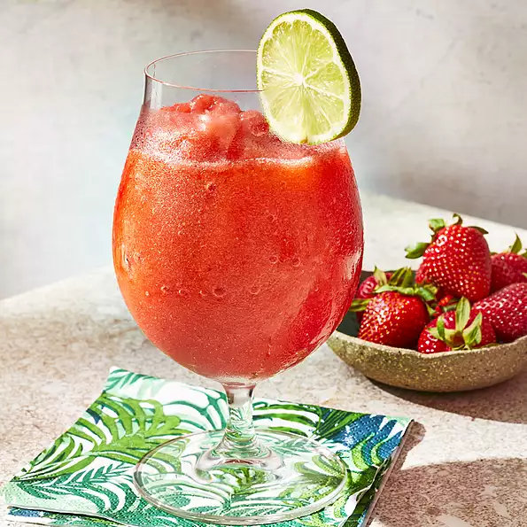

Best Strawberry Daiquiri

Description
A frosty blender full of strawberry-citrus slush. You will enjoy this with or without the rum!
Ingredients
- 6 cups ice
- ½ cup white sugar
- 4 ounces frozen strawberries
- ⅛ cup lime juice
- ½ cup lemon juice
- ¾ cup rum
- ¼ cup lemon-lime flavored carbonated beverage
Steps
- In a blender, combine ice, sugar and strawberries. Pour in lime juice, lemon juice, rum and lemon-lime soda. Blend until smooth. Pour into glasses and serve.